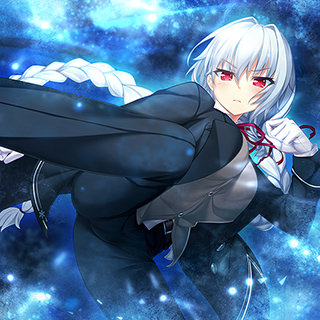
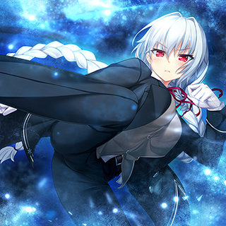

アイリス・ディセンバー・アンクライ
忘れ去られた冬の国、アンクライ皇国の皇女。人々から忘れられた母国を思い出してもらうため地上へやってくる。明るく元気に振る舞おうとするが、夏真っ盛りの地上に苦労している。
cv.花園めい
誕生日：12月24日血液型：判別不明身長：163cmスリーサイズ：102(I)・59・88好きなもの：かき氷悩み：よく忘れられてしまうこと家族構成：母
ノエル・ザ・ネクストシーズン
アイリスの付き人。皇族と言葉を交わすのは恐れ多いことだと考えているため、意思を伝える場合は、自らの声を録音した機械を使用する。身体能力が高く、アイリスのためなら犬馬の労も惜しまない。
cv.雨場つかさ
誕生日：2月11日血液型：判別不明身長：161cmスリーサイズ：84(D)・60・84好きなもの：本悩み：無し家族構成：不明
高田ノブチナ
仁侠一家の娘。ときに辛辣なことも言うが、仲間を想ってのこと。父親がいない間も家を取りまとめ、その手腕は多岐に渡る。姉とはケンカが絶えない。
cv.はちみつこ
誕生日：1月30日血液型：O型身長：150cmスリーサイズ：79(B)・59・82好きなもの：地元悩み：背が伸びない家族構成：父・姉
ルーシア・オブ・エンド・サクラメント
冥界三姉妹の長女。妹たちのことを第一に考えている。妹を護るために魔犬ケルベロスを倒した過去があり、そのせいで魔犬の一族から狙われている。かつては冥界を滅ぼしかねないほど強大な魔力・サクラメントを有していた。
cv.院出華真衣
誕生日：3月3日血液型：判別不明身長：168cmスリーサイズ：99(I)・58・85好きなもの：妹たち悩み：犬が苦手家族構成：母・妹
ユウラシア・オブ・エンド
冥界三姉妹の末っ子。魔法に関しては天才肌。自分が楽しいと思うものには興味を示すが、それ以外には無関心。最近、携帯電話が欲しくて仕方がない。
cv.卯衣
誕生日：4月2日血液型：判別不明身長：148cmスリーサイズ：78(A)・57・78好きなもの：シュークリーム悩み：携帯電話がほしい家族構成：母・姉
パトリシア・オブ・エンド
冥界の皇女。地上を滅ぼすためにやって来るが、地上の生気にやられ苦しんでいるところをノラに助けられる。最近では、近所の子どもたちに絵本を読み聞かせている。
cv.小鳥居夕花
誕生日：12月31日血液型：判別不明身長：165cmスリーサイズ：89(F)・56・85好きなもの：魔導書悩み：絵本の売り場が狭いこと家族構成：母・姉・妹
黒木未知
学園の風紀委員を務める、ノラの幼馴染。さらなる勉学のため、短期留学をすることに。その留学先で、軽はずみで出場したクイズ大会にて、脅威の成績を叩き出すこととなる。
cv.遥そら
誕生日：5月8日血液型：A型身長：164cmスリーサイズ：90(G)・55・84好きなもの：勉強悩み：勉強の時間が減ること家族構成：母
夕莉シャチ
幼少期にノラが浜辺で見つけた少女。家事全般が得意で、料理は近所の子どもたちにも大人気。ノラがネコになってからも、その世話を欠かさない。
cv.神代岬
誕生日：6月10日血液型：不明身長：168cmスリーサイズ：96(H)・58・89好きなもの：料理悩み：静電気が苦手家族構成：ノラ
明日原ユウキ
バイト経験豊富なノラの幼馴染。現在はネコ喫茶でバイトしていることもあり、ネコになったノラをバイトに誘ったこともある。最近、将来について考えるようになった。
cv.桐谷華
誕生日：7月7日血液型：B型身長：160cmスリーサイズ：86(E)・54・82好きなもの：友だち悩み：時給が上がってほしい家族構成：健在
高田ノブチカ
ノブチナの姉。大学進学とともに家を飛び出し、弁護士となる。怒ると実家ゆずりの口調が飛び出してしまい、周囲が怯えることも。
cv.矢羽薫
田中ちゃん
ノラのクラスメイトで心優しい女の子。クラスで一番、今年の文化祭を楽しみにしている。
cv.松手多代
井田
ノラのクラスメイトで不良。冥界のドクロに拳で挑む男。
cv.笹崎こじろう
オルカ
夕莉シャチと関わりのある少女。感情に抑揚がなく、無駄なものは徹底的に省いていく。
cv.東雲りあ


 



{kind=link}
{kind=link}
{kind=link}
{kind=link}
{kind=link}
{kind=link}
{kind=link}
{kind=link}